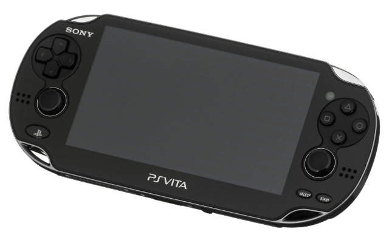
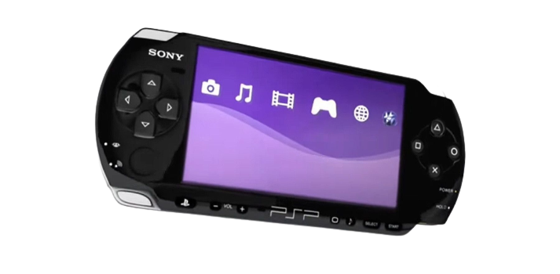

Além dos consoles principais, a Sony também entrou na área de consoles portáteis. 10 anos após o lançamento do PlayStation 1, surgiu o PlayStation Portable, conhecido popularmente como PSP. Com uma bela capacidade de oferecer gráficos 3D interessantes, o console portátil da Sony era tecnicamente superior ao seu rival, Nintendo DS. O PSP contava ainda com os discos UMD, permitindo que os jogadores pudessem armazenar até 1,8 GB em filmes e jogos.
 Porém, apesar de ter um hardware superior, o PSP viu a Nintendo utilizar melhor o seu console portátil e ganhar a disputa contra a Sony. Ainda assim o PlayStation Portable não foi um fracasso e tornou-se o quarto console portátil mais vendido da história. Com bons jogos oferecidos aos jogadores, o PSP teve em sua biblioteca títulos interessantes como GTA: Liberty City Stories, Gran Turismo e God of War: Chains of Olympus. O PSP recebeu diversos modelos ao longo dos anos, sendo eles PSP-1000, PSP-2000, PSP-3000, PSP Go e PSP-E100.Em dezembro de 2011, o sucessor do PSP foi lançado. O PS Vita chegou para concorrer com o Nintendo 3DS, colocando Sony e Nintendo frente a frente mais uma vez. A Sony investiu no hardware outra vez, fazendo com que o Vita fosse mais poderoso que seu antecessor. Além disso, o console portátil também apresentou novidades nos controles com a adição de um giroscópio, um segundo analógico direcional e um painel sensível ao toque na traseira. Mas ainda que tenha sido potente, o PlayStation Vita não conseguiu se destacar. O console apresentou bons números nas primeiras semanas, mas rapidamente despencou e apresentou um resultado muito abaixo do esperado. Uncharted: Golden Abyss e Rayman Origins foram alguns títulos de destaque, mas nem estes foram capazes de tornar o console um sucesso entre os jogadores.